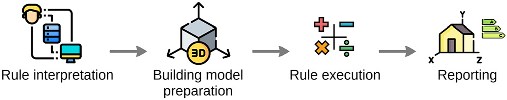
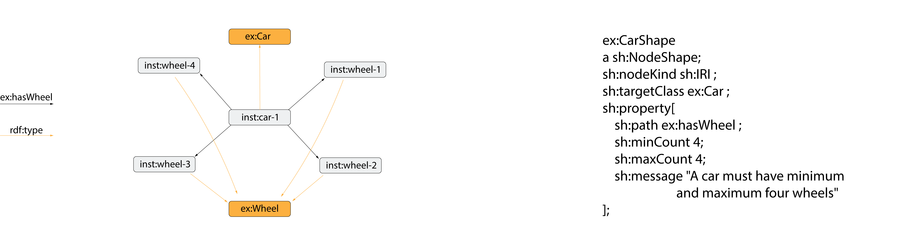
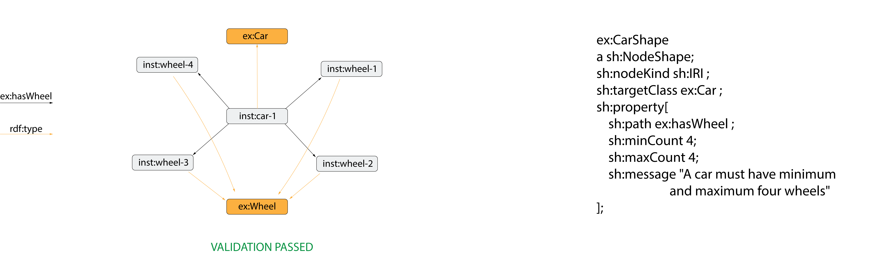
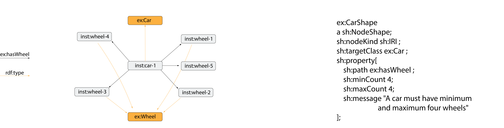
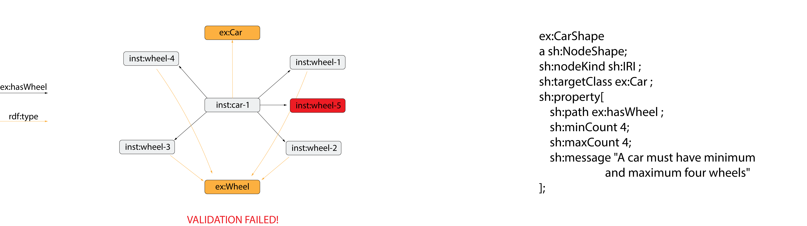
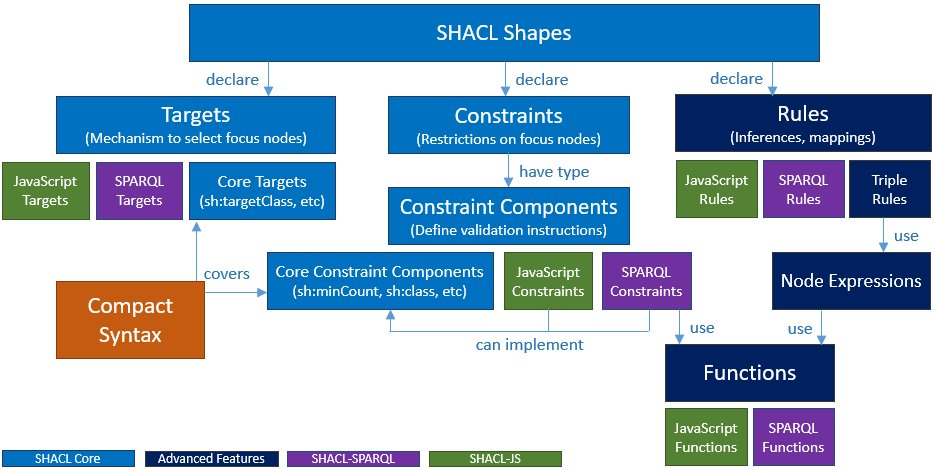

Introduction to Linked Building Data
Agenda
- Current state of BIM and how to improve it
- Towards a modular and extendable data representation
- Demos
Current state of BIM and how to improve it
"Our industry works in a document-centric manner rather than a data-centric one"
"Exchange of BIM-data as files makes data integration impossible"
"We need to move from Today's monolitic nature of BIM to a network based one"
So how do we do this?
The idea is to use the existing infrastructure of the World Wide Web to mediate a distributed, network-based BIM
Web of documents
Web of data
Data is stored and hosted by the stakeholder who generated it and is responsible for it
Data can be shared with authenticated people or be made publicly available
The model data can be extended with Linked Open Data (product- and material properties, IoT, GIS)
Even the schemas are distributed, and can therefore extend one another
Current situation: Open standards in isolated closed worlds
Linked data benefit: Standards use, extend and refer to one another
Increasing Building Information
How do we ensure the data quality in BIM models?
The 4-step Compliance Checking Method

C. Eastman, J. min Lee, Y. suk Jeong, J. kook Lee, Automatic rule-based checking of
building designs (2009)
Open World Assumption
OWL
"A car can have 4 wheels"
Close World Assumption
SHACL
"A car must have 4
wheels"






Expressing an HVAC rules explicitly
fso:PipeComponsition
a sh:NodeShape;
sh:nodeKind sh:IRI ;
sh:targetClass fpo:Pipe ;
sh:property [
sh:path fso:hasPort ;
sh:dataType xsd:anyURI;
sh:minCount 2;
sh:maxCount 2;
sh:message "A pipe must have minimum/maximum two flow ports"
];
//... the shape continues
Expressing an HVAC rules implicitly
fso:PipeMaxPressureDrop
a sh:NodeShape;
sh:nodeKind sh:IRI ;
sh:targetClass fpo:Pipe ;
sh:sparql [
a sh:sh:SPARQLConstraint ;
sh:message "The pressure drop for a pipe shall not exceed 100 Pa/m";
sh:prefixes (fpo: fso: inst:) ;
sh:select """
PREFIX fso: http://w3id.org/fso#
PREFIX fpo: http://w3id.org/fpo#
PREFIX inst: https//example.com/inst#
SELECT ?this ?value
WHERE {
?this a fpo:Pipe .
?this fpo:length ?length .
?length fpo:value ?lengthvalue .
?this fso:hasPort ?port .
?port fpo:flowDirection ?flowDirection .
?flowDirection fpo:value "Out" .
?port fpo:pressureDrop ?pressureDrop .
?pressureDrop fpo:value ?pressureDropValue .
BIND ((?pressureDropValue / ?lengthvalue) AS ?value) .
FILTER (?value > 100)} """ ;
] .
Expressing an HVAC rules by inference
fso:PipeSizingPex
sh:NodeShape ;
sh:targetClass fpo:Pipe ;
sh:rule [
a sh:SPARQLRule ;
sh:prefixes (fpo: fso: ex: );
sh:construct """
CONSTRUCT {?diameter fpo:value ?newSize.}
WHERE {
?this a fpo:Pipe .
?this fpo:materialType ?type .
?type fpo:value "PEX" .
?this fso:hasPort ?port .
?port fpo:outerDiameter ?diameter .
?diameter fpo:value ?diameterValue .
BIND (
IF( ?diameterValue = 0.012, 0.015,
IF(?diameterValue = 0.015, 0.018,
IF(?diameterValue = 0.018, 0.020,
IF(?diameterValue = 0.020, 0.022,
IF(?diameterValue = 0.022, 0.028,
IF(?diameterValue = 0.028, 0.032,
IF(?diameterValue = 0.032, 0.040,
IF(?diameterValue = 0.040, 0.050,
?diameterValue
)))))))) AS ?newSize)} """ ;
condition: fso:PipeMaxPressureDrop
] .